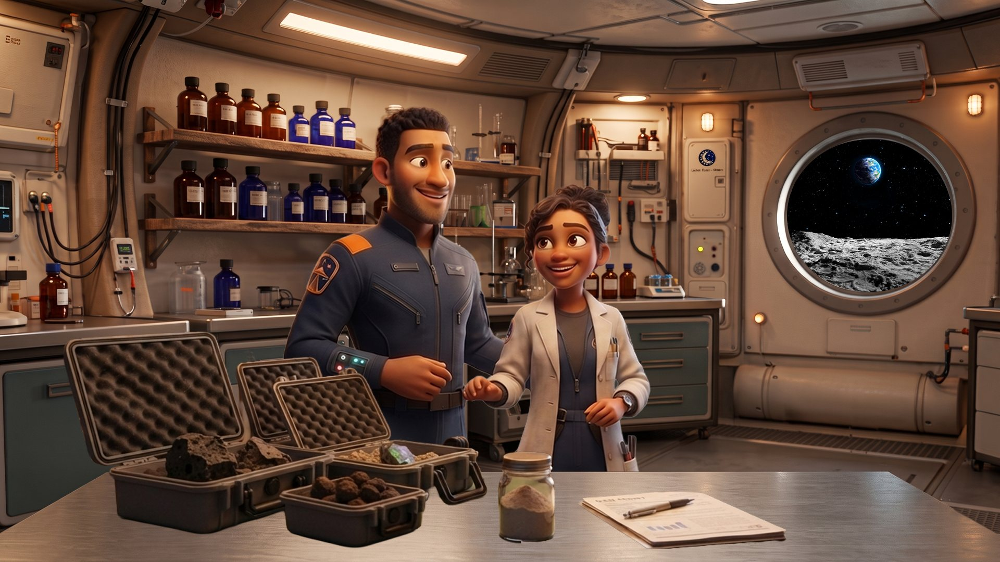
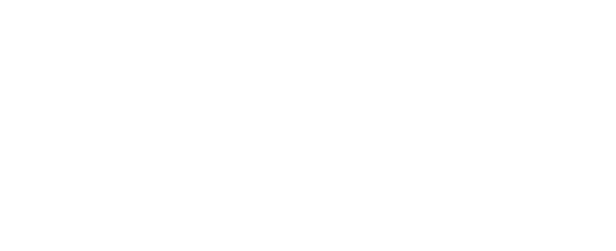
זוכרים אותנו? במעבדת תחנת העגינה לקחנו דגימות מהירח ומדדנו את נפחן כדי שנוכל לארוז אותן במדויק.
נתוני הנפח של הדגימות הושלמו, אך המקום באחסון הוא רק חלק מהסיפור. כעת נשאר לנו לבצע את כל מדידות המשקל כדי לוודא שאיננו חורגים ממגבלת המטען של המעבורת.
אתה מתכוון כנראה למדידה של המסה ולא של המשקל. אתה מבין את ההבדל ביניהם?
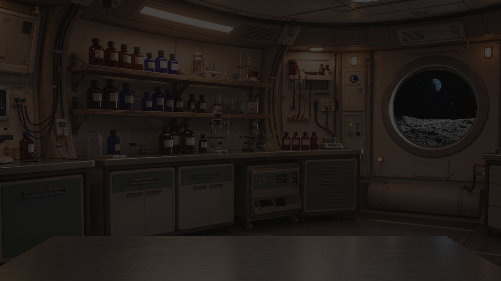
זוכרים את הדגימות?
לחצו על כל דגימה כדי לקבל מידע.
צפו בהדמיה הבאה של אותו הסלע בשלוש סביבות בעלות שונים.
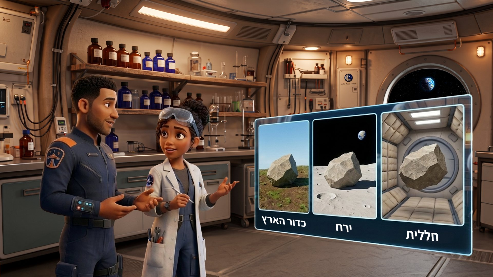
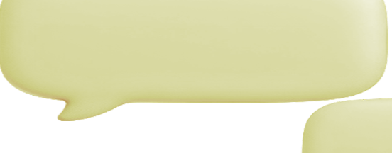
הבנתי, המשקל של הסלע תלוי בעוצמת הכבידה, ולכן הוא משתנה ממקום למקום. אבל מה עם המסה?
מה אתה חושב, גל? האם כמות החומר שבסלע השתנתה במעבר ממקום למקום?
המשקולות
שאלה 1:
עִזרו לגל להבין את ההבדל בין מסה (כמות החומר) לבין משקל (כוח הכבידה שפועל על הגוף).
השלימו את החסר בפסקה הבאה:
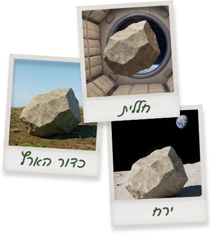
כשמעבירים את הסלע מהירח לכדור הארץ, כמות החומר שבתוכו .
אם לא מוסיפים לגוף חומר ולא גורעים ממנו חומר, כמות החומר בגוף, כלומר ה נשארת קבועה. זהו חוק שימור ה.
לעומת זאת, משקלו של הסלע ממקום למקום מפני שכוח הכבידה בין גרמי שמיים שונים. בירח משקלו משקלו בכדור הארץ, ואילו בחללית בדרך מהירח לכדור הארץ אין לו כלל, ולכן הוא מרחף.
הבנתי את ההבדל בין מסה למשקל. אבל איך אפשר למדוד אותם?
משקל מודדים בעזרת ומסה מודדים בעזרת מאזניים.
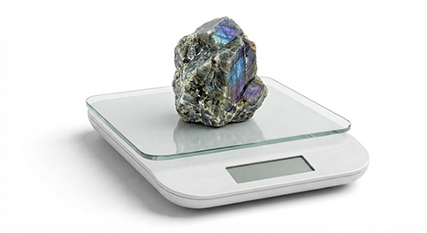
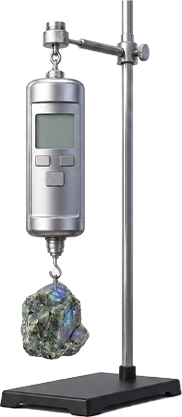
לחצו על הלשוניות והכירו את מד-הכוח:
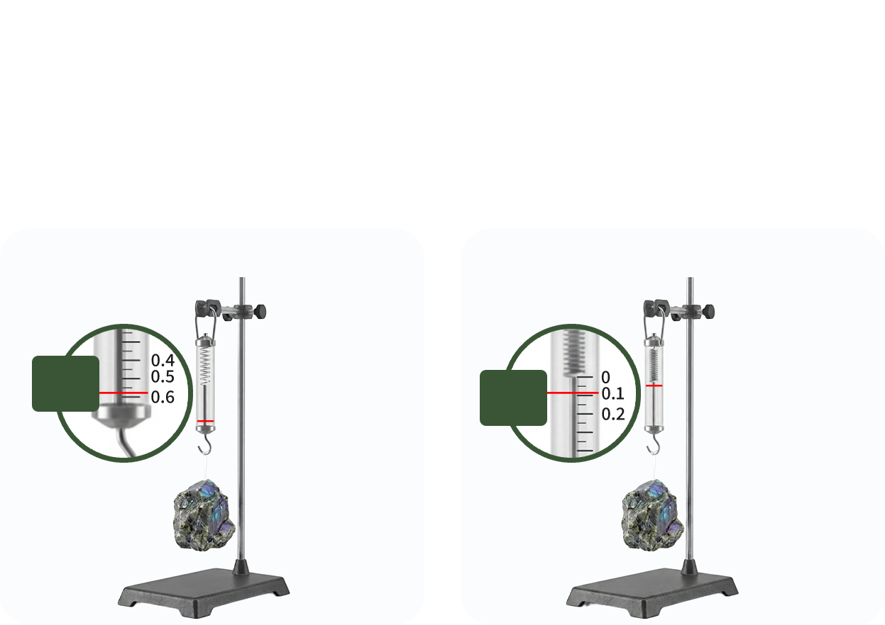
ניוטון
ניוטון
יש לנו מאזניים?
כן, ישנם סוגים שונים של מאזניים, כמו מאזניים דיגיטליים, מאזני כפות ומאזני כף. אנחנו כאן בירח נשתמש במאזני כפות, אתה יודע כיצד משתמשים בהם?
במאזניים
שאלה 2:
שירה מניחה את דגימת סלע האנורתוזיט על כף אחת ואת על הכף השנייה. העזרו ב המדמה את תהליך מדידת המסה על פני הירח ועל פני כדור הארץ. מה אפשר להסיק מההדמיה?
סמנו את כל התשובות הנכונות:
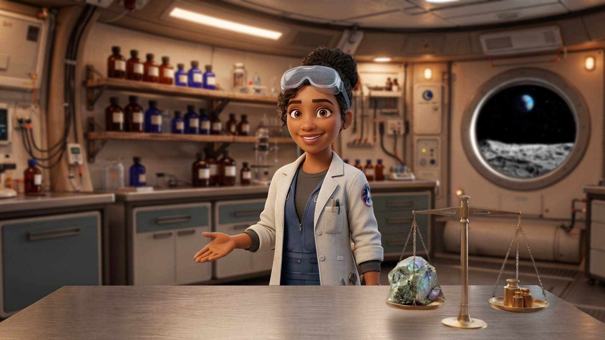
המדידה של הסלע על המאזניים בירח ובכדור הארץ היא ראיה מדעית לכך שהמסה (בניגוד למשקל) היא תכונה קבועה של החומר.
הירח מושך את הסלע ואת אבני המסה בכוח קטן יותר מאשר כדור הארץ (המשקל בירח קטן מהמשקל בכדור הארץ).
עם זאת, מכיוון שהמסה של הסלע ושל אבני המסה זהה, הם נמשכים במידה שווה, ולכן המאזניים מאוזניים.
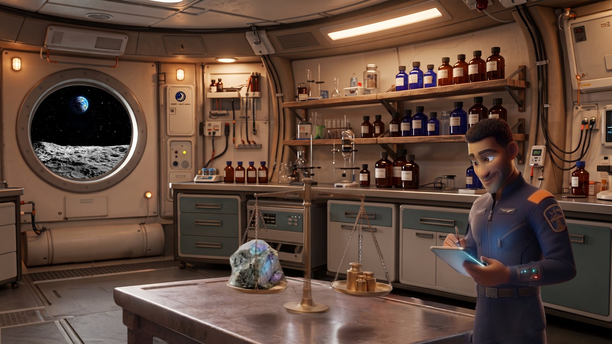

מסת דגימת סלע אנורתוזיט נמדדה. נוסיף את הנתון לדוח הנתונים:
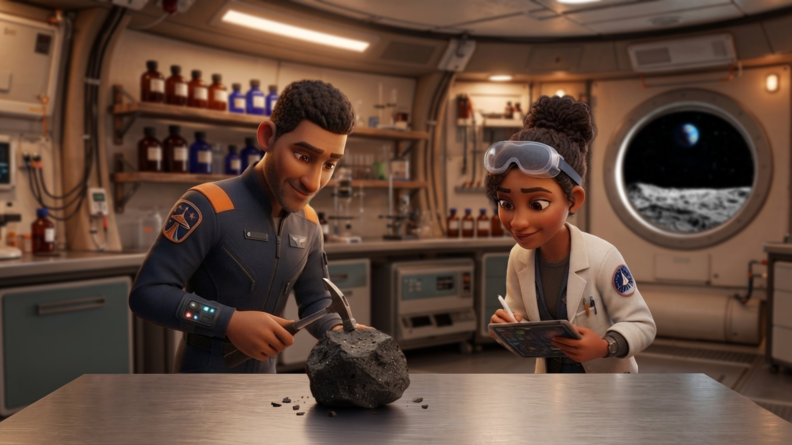
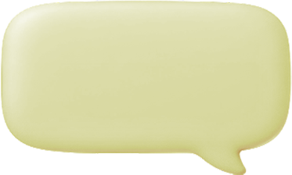
עיקרון המדידה במאזניים ברור יותר עכשיו. בואו נמשיך במדידות.
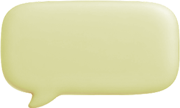
נמשיך עם דגימת סלע בזלת מארה.
שאלה 3:
כדי לקחת דגימת סלע בזלת מהירח, שירה וגל שברו גוש סלע גדול באמצעות פטיש. הסלע התנפץ למספר חלקים קטנים, כמתואר בתמונה.
קראו את השאלות ובחרו את התשובה הנכונה בכל סעיף:
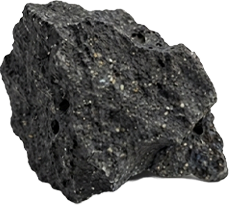
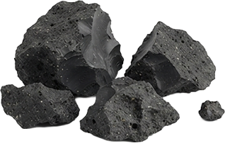
1. באיזו יחידת מידה הייתם מודדים את מסת הסלע הגדול?
2. באיזו יחידת מידה הייתם מודדים אבן קטנה שהתפרקה מהסלע הגדול?
3. מה ניתן לומר על המסה של החלקים שהתפרקו מתוך הסלע הגדול?
מסת החלקים יחד מסת הסלע השלם.
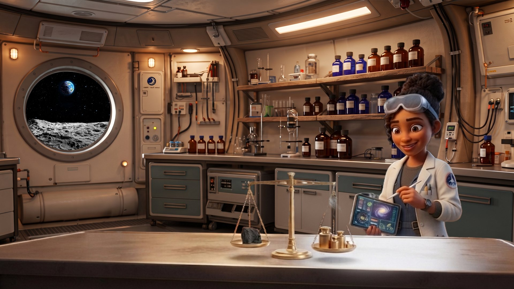
מסת דגימת סלע בזלת מארה נמדדה. נוסיף את הנתון לדוח הנתונים:
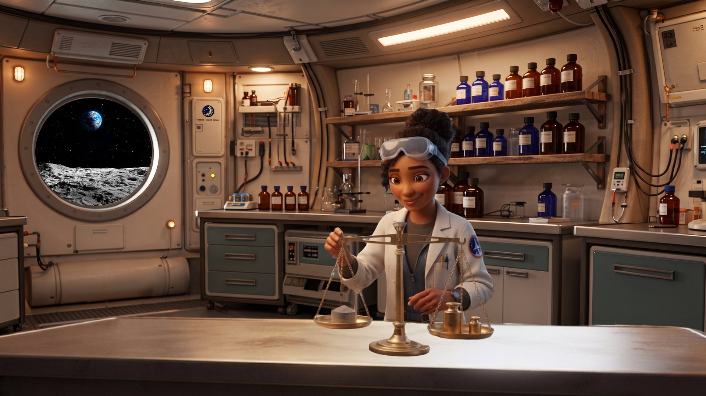
כעת נמדוד את מסת אבקת הרגולית. על כף מאזניים אחת נניח כלי ובו אבקת רגולית, ועל הכף השנייה – שתי אבני מסה שמסתם הכוללת היא 220 גרם. כפות המאזניים מאוזנות.
שאלה 4:
כשכפות המאזניים מאוזנות, סך כל אבני המסה שהונחו על כף המאזניים הוא 220 גרם.
האם נתון זה מייצג את כמות החומר של אבקת הרגולית שאותה רצינו למדוד?
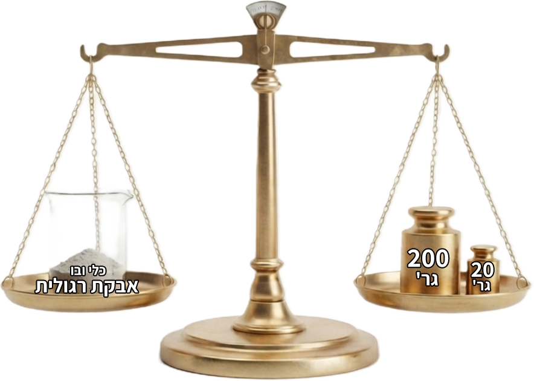
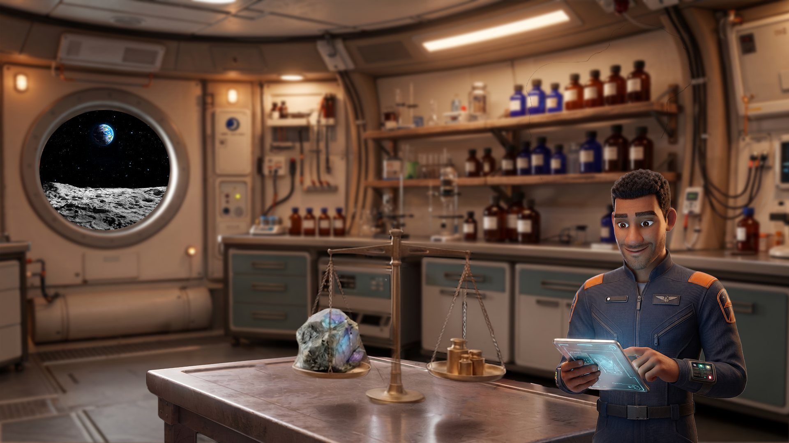
הבנתי. מסת הכלי עם אבקת הרגולית היא 220 גרם. מסת הכלי היא 100 גרם, כלומר מסת אבקת הרגולית שווה ל־120 גרם.
שירה, הנחתי גרגר בודד של אבקת הרגולית על המאזניים שבהם מדדנו את מסת הכלי ואבקת הרגולית, אך כפות המאזניים לא זזו. לגרגר הזה אין מסה!
אתה טועה, גל, לכל חומר בעולם יש מסה.
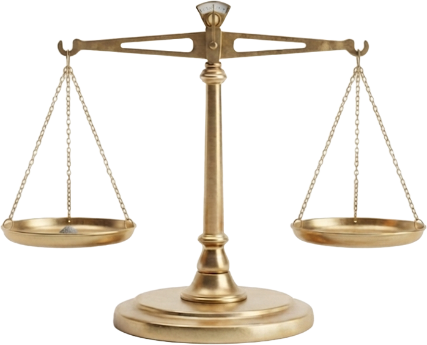
שאלה 5:
גל טוען שלגרגר אחד אין מסה, ושירה טוענת שלכל חומר בעולם יש מסה.
מי לדעתכם צודק, גל או שירה? מדוע?
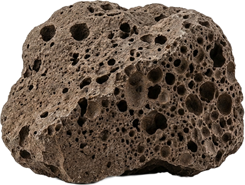
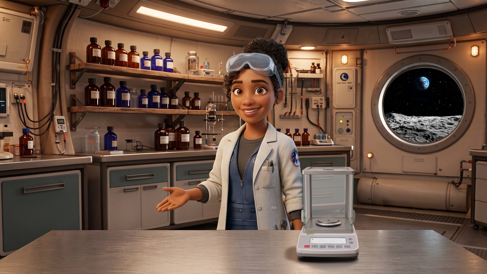
לכל חומר יש מסה, אך כדי למדוד כמויות קטנות מאוד של חומר, עלינו להשתמש בכלי בעל רגישות מדידה מתאימה.
מסה של גרגר רגולית נמדדת בטווח יחידות של מיקרוגרמים (מיליונית הגרם!).
לא ניתן למדוד מסה זעירה כזו במאזניים רגילים, ולכן הם יראו '0', אך שימוש במאזניים רגישים יאפשר לנו למדוד אותה במדויק.
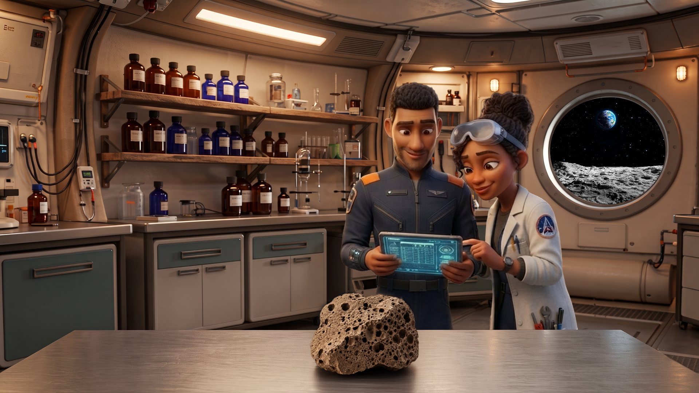
מדדתי את מסת דגימת סלע הבזלת הנקבובית שלוש פעמים, אך קיבלתי נתון אחד שערכו גבוה במיוחד:
בזלת נקבובית
כמדענים, אנחנו חייבים לבחון היטב את הנתונים שמהם אנו מסיקים מסקנות.
שאלה 6:
כיצד על צוות המעבדה לנהוג במקרה של תוצאה חריגה כזו? מדוע?
בזלת נקבובית
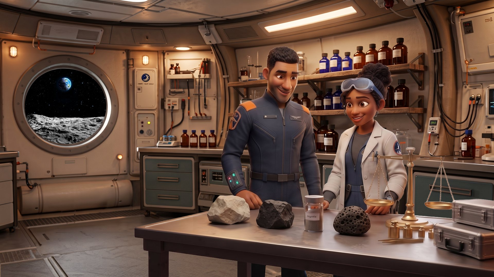
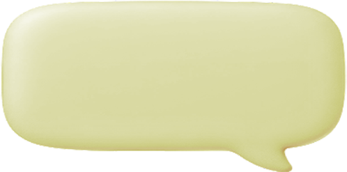
סיימנו לתעד את נתוני המסה והנפח של דגימות הסלע בדוח, כעת נוכל להתאים להן אריזות ולשלוח אותן באופן בטוח לכדור הארץ.
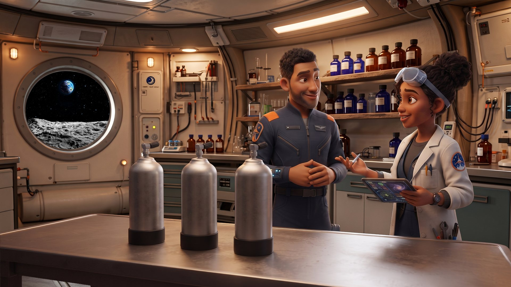
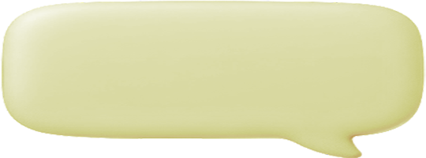
גל, שכחת שיש כאן שלושה מכלי גז שגם אותם צריך לארוז ולשלוח לכדור הארץ.
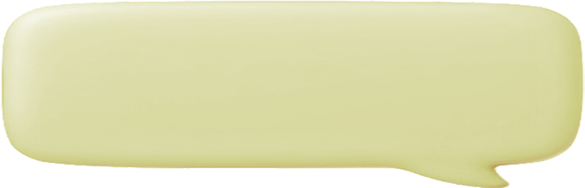
נכון, הם זהים לגמרי בנפחם ומכילים אותו חומר – גז שנלקח מסביבת הירח (גז ירחי). האם נוכל להסיק שיש בכל אחד מהם אותה מסה (כמות חומר) של גז?
לא בטוח, גל. בוא נסתכל בטבלת נתוני המדידות של המעבדה.
שאלה 7:
| מיכל | תכולה | נפח המיכל (ליטר) | נפח הגז (ליטר) | מסת המיכל הריק (גרם) | מסת הגז בקירוב (גרם) |
|---|---|---|---|---|---|
| א | גז ירחי | 1 | 1 | 120.0 | 0.6 |
| ב | גז ירחי | 1 | 1 | 120.0 | כ-0.00000001 |
| ג | גז ירחי | 1 | 1 | 120.0 | כ-1.2 |
התבוננו בנתונים שבטבלה. מהי המסקנה שנוכל להסיק לגבי מסת הגז בשלושת המכלים?
שירה, משהו פה לא מסתדר. גז מתפשט וממלא את כל נפח המיכל. אם נפח הגז זהה במכלים, איך יכול להיות שכמות החומר שונה בכל מיכל?
כן, התשובה טמונה בתכונות של מצב הצבירה הגזי.
| מיכל | תכולה | נפח המיכל (ליטר) | נפח הגז (ליטר) | מסת המיכל הריק (גרם) | מסת הגז בקירוב (גרם) |
|---|---|---|---|---|---|
| א | גז ירחי | 1 | 1 | 120.0 | 0.6 |
| ב | גז ירחי | 1 | 1 | 120.0 | כ-0.00000001 |
| ג | גז ירחי | 1 | 1 | 120.0 | כ-1.2 |
שאלה 8:
| מיכל | תכולה | נפח המיכל (ליטר) | נפח הגז (ליטר) | מסת המיכל הריק (גרם) | מסת הגז בקירוב (גרם) |
|---|---|---|---|---|---|
| א | גז ירחי | 1 | 1 | 120.0 | 0.6 |
| ב | גז ירחי | 1 | 1 | 120.0 | כ-0.00000001 |
| ג | גז ירחי | 1 | 1 | 120.0 | כ-1.2 |
מהי התשובה לשאלתו של גל – איך יכול להיות שכמות החומר שונה בכל מיכל?
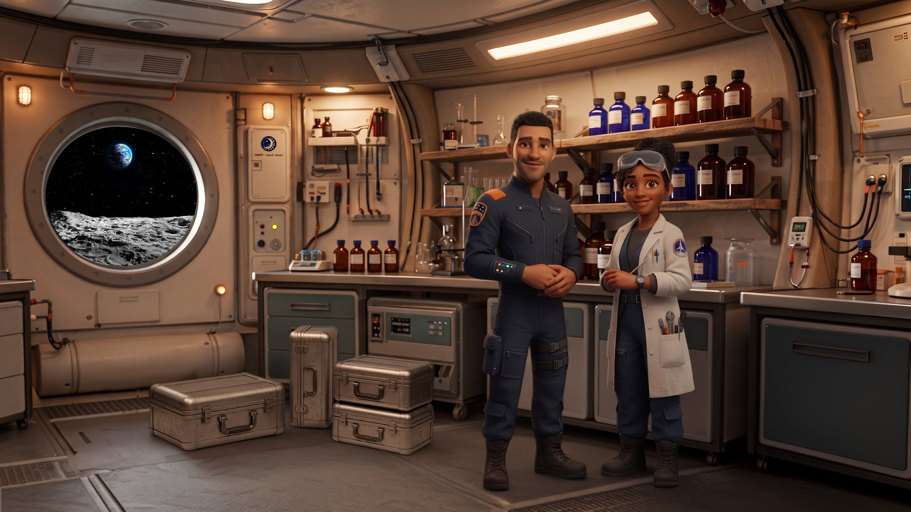
זהו, שירה, סיימנו את מדידות הנפח והמסה, למדנו על המקום שהחומר תופס במרחב ועל כמות החומר.
כעת הגיע הזמן לחזור לכדור הארץ.